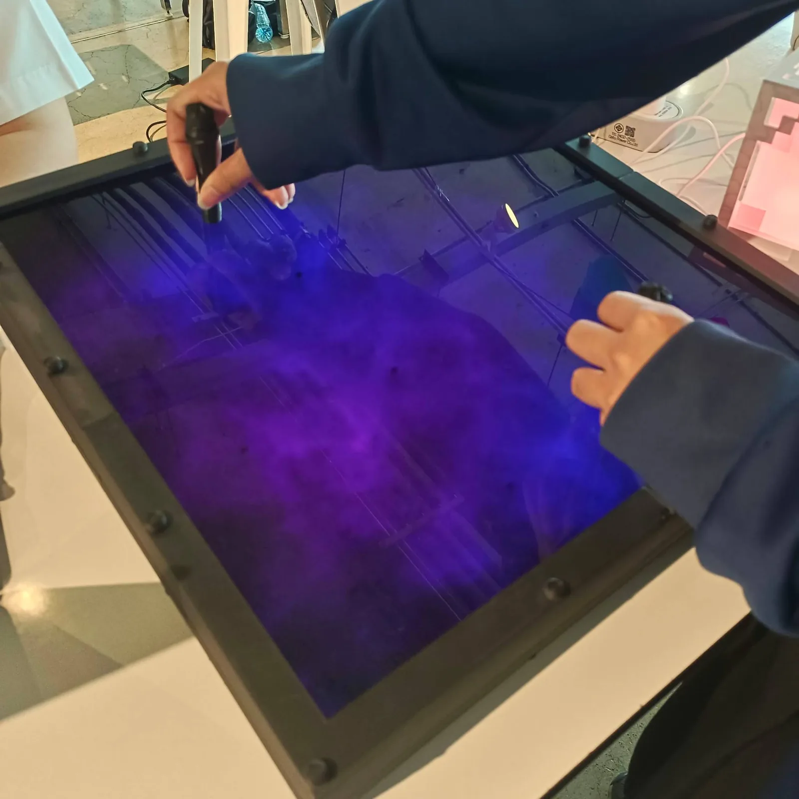

Magnetic Universe
ผนังแสงขนาด 40 × 40 ซม. ที่แม่เหล็กทุกก้อนที่วางลงไปจะได้วงแสงของตัวเองที่ลอยอยู่ระหว่างเซนเซอร์ — และวงแสงสองวงจะผสานกันเหมือนจักรวาลเล็ก ๆ
สรุปสั้น ๆ: ผนังแสง 40 × 40 ซม. ที่แม่เหล็กแต่ละก้อนได้วงแสงของตัวเอง ฉันเป็นหัวหน้าทีม คิดวิธีตรวจจับ ขึ้นโมเดล พิมพ์ เดินสาย และบัดกรี; AI เขียนโค้ดจากไอเดียของฉัน — งานในวิชา สร้างเสร็จและใช้งานได้
- ปี
- ม.ค. – พ.ค. 2026
- ทีม / บทบาท
- หัวหน้าทีม
- เครื่องมือ
- เซนเซอร์ Hall (เซนเซอร์วัดสนามแม่เหล็ก) 16 ตัว · แถบ LED แบบ addressable · Tinkercad · พิมพ์ 3D
- สถานะ
- งานในวิชา

โจทย์
แผนแรกใช้เซนเซอร์ Hall แผงละ 25 ตัว 3 แผง — ต้องบัดกรี 75 ตัว และถ้าใช้เซนเซอร์น้อยกว่านั้นจะจับได้เป็นหย่อม ๆ แสงยังต้องดูเป็นวงนุ่ม ๆ ไม่ใช่จุด LED บนกรอบที่หนักอยู่แล้วและต้องตั้งเอียง
สิ่งที่ฉันตัดสินใจ
- ฮาร์ดแวร์น้อยลง คณิตศาสตร์มากขึ้น เซนเซอร์ Hall 16 ตัว (4 × 4) บนแผง 400 × 400 มม. อ่านเฉพาะ 4 ตัวรอบแม่เหล็ก แล้วคำนวณตำแหน่งจากระยะ แม่เหล็กจึงไม่ต้องวางตรงเซนเซอร์ วิธีนี้แก้ได้ทั้งเรื่องการแมปพิกัดและภาระการบัดกรี
- ใช้เซนเซอร์ที่อยู่ใกล้ ไม่ใช่ค่าเฉลี่ย ฉันค้านการเฉลี่ยเซนเซอร์ทั้ง 16 ตัว และให้คำนวณตำแหน่งจากกลุ่มข้างเคียงเท่านั้น
- หนึ่งวงต่อหนึ่งแม่เหล็ก แม่เหล็กแต่ละก้อนได้วงแสงหนึ่งวงที่ “ลอย” อยู่ระหว่างเซนเซอร์ตามความแรงของสนาม; นำแม่เหล็กสองก้อนเข้าใกล้กัน วงแสงจะผสานเป็นภาพเดียว
- ใส่ใยกันความร้อน ไม่ใช่ทำกรอบหนาขึ้น วิธีที่มีคนเสนอ (กล่องพิมพ์สีขาว อะคริลิกดำ เว้นระยะ) ยังเห็นเป็นจุด เพราะอะคริลิกอยู่ใกล้ LED ฉันจึงอัดใยทนความร้อนในชั้นเซนเซอร์: ไม่ช็อตที่จุดบัดกรี ไม่รบกวนเซนเซอร์ Hall ไม่เพิ่มน้ำหนัก — และแสงกระจายสม่ำเสมอ
- คงกรอบ 6 ซม. ฉันเคยคิดถึง 8 ซม. แต่แผงหนัก 3–4 กก. อยู่แล้ว และติดตั้งเอียง 60°
- พิมพ์ตัวยึดเอง แท่งเกลียวกับฝาหมุน (ปุ่มกลมบนกรอบคือน็อตที่พิมพ์เอง) และกรอบที่ประกอบเป็นชั้น ฉันจับได้ว่าเกลียวบางเกินจนสไลเซอร์พิมพ์ไม่ได้
ผลลัพธ์
ชิ้นงานสุดท้ายเป็นแผงเดียวขนาด 40 × 40 ซม. ใช้เซนเซอร์ 16 ตัว และทำงานได้ตามภาพด้านล่าง: วางแม่เหล็กบนหน้าแผงแล้วเกิดวงแสง และแม่เหล็กสองก้อนผสานกันได้ ก่อนลงมือทำทั้งกริด ฉันทดสอบกับเซนเซอร์ 4 ตัวก่อนว่ายังจับแม่เหล็กได้ผ่านชั้นกระจายแสง
แกลเลอรี





ส่วนของฉัน vs AI
ฉัน: คอนเซปต์และออกแบบอุปกรณ์ ตรรกะการตรวจจับ ขึ้นโมเดลและพิมพ์ด้วยเครื่องพิมพ์ 3D ของตัวเอง ประกอบและบัดกรี AI: เขียนโค้ดคำนวณตำแหน่งจากไอเดียของฉัน เพื่อนในทีม: เอกสารและการนำเสนอ